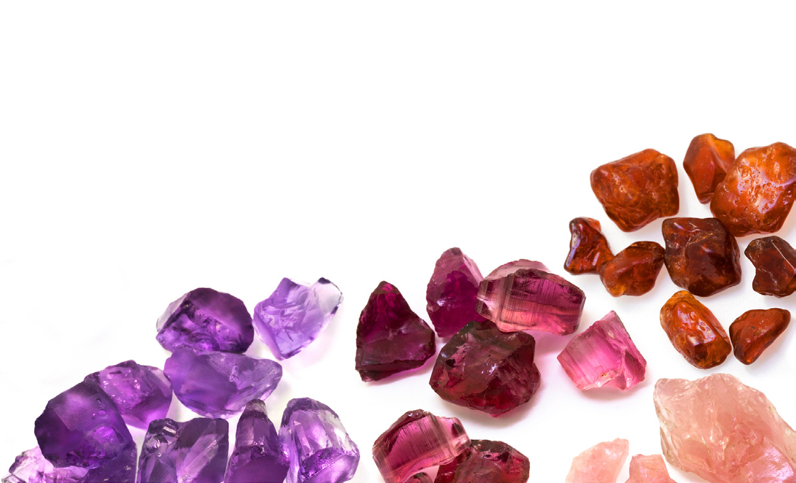

¿QUÉ SABEMOS?
Resolved estas preguntas y comprobado desde qué punto partís a la hora de enfrentarlos al reto:
- ¿De qué capas de la Tierra se extraen los minerales y las rocas?
- ¿En qué grupos se dividen las rocas según su origen?
- ¿Qué relación guardan las cuevas con el ciclo del agua?
- ¿Qué preguntas necesitáis resolver para afrontar con éxito la tarea? Escribidlas, ponedlas en común y cread una lista que las recoja.
Resolved individualmente las siguientes preguntas:
- a. ¿Qué tengo que hacer?
- b. ¿Para qué voy a hacer la tarea?
- c. ¿Qué voy a necesitar para hacerla?
- d. ¿A quién quiero que le guste este trabajo?
- e. ¿Necesitaré que me ayuden?
¿POR DÓNDE EMPEZAMOS?
- El método kanban os será útil a la hora de organizaros de manera eficaz mientras elaboraréis el mapa de las minas andaluzas.
- A partir de las conclusiones que habéis extraído de las preguntas sobre lo que teníais que hacer y aprender para crear el mapa, preparar las tarjetas que iréis ubicando en el kanban. Recordad que cada acción o tarea equivale a una tarjeta.
- Prestad atención a los impedimentos, contratiempos e imprevistos que surjan y que puedan afectar a la planificación. Actualizad vuestras tareas en consonancia.
- Al finalizar la tarea, comprobado que todas las tarjetas están en la columna HECHO. Si no es así, analizad los desajustes que observéis.
